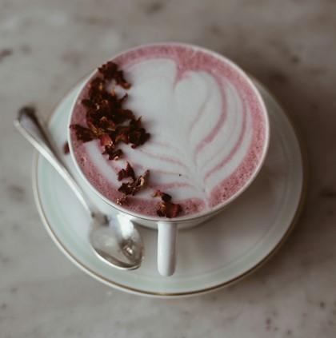

Välkommen in till oss på Kaffekoppen!
Välkommen till vår sida!
Välkomna till oss på Kaffekoppen! Vi är ett litet café som ligger i centrum av Göteborg. Här handlar allt om kaffe - från den klassiska bryggkaffen till spännande kaffedrycker. Vi har noggrant valt ut olika kaffesorter för att kunna ge er en helhetsupplevelse där varje kund kan hitta det som passar för just den stunden. Om ni vill veta mer eller har några funderingar kan ni klicka er vidare till sidan "om oss" eller komma förbi och ta det över en kopp kaffe.
Säsongens drycker
Islatte Matcha
Jordgubbslatte
Islatte Karamell
För våra anställda
Är du anställd hos oss och vill komma åt ditt konto? Gå vidare till sidan "Anställda" och logga in med ditt användarnamn och lösenord. Där kan du sedan göra uppdateringar eller ändringar.